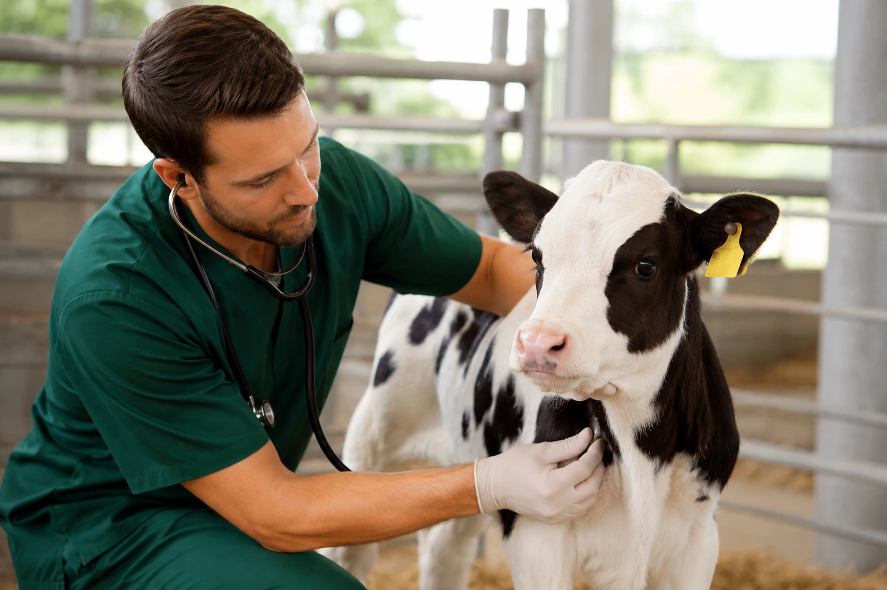

Tudo o que você precisa em um só lugar
Trabalhamos com marcas líderes do mercado nacional e produtos certificados, garantindo durabilidade e saúde para seus animais.

Tudo para seu Pet
Marcas consagradas (Premier, Golden, Special Dog e outras). Nutrição completa de qualidade para cães, gatos, aves e cavalos.

Farmácia Veterinária
Vacinas, vermífugos, antibióticos e suplementos de alto padrão para manter a saúde dos animais rurais e domésticos em dia.

Selaria & Moda Country
Botas de couro legítimo, chapéus, cintos, fivelas, cabeçadas e arreios de fabricação impecável para o peão e para o dia a dia.

Ferramentas em geral
Tudo para construção de cercas, manutenções e para o dia-a-dia no campo ou em casa.

Insumos & Plantio
Sementes de alta genética, fertilizantes e defensivos essenciais para garantir um estabelecimento de cultura vigoroso.

Utilidades para casa
Soluções inteligentes para a manutenção, organização e cuidado do seu lar. Garanta mais praticidade no dia a dia com produtos de qualidade que facilitam a sua rotina.